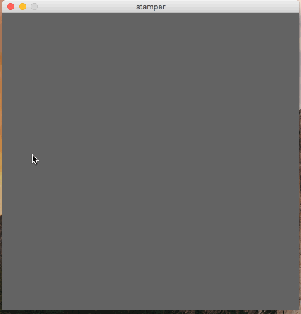
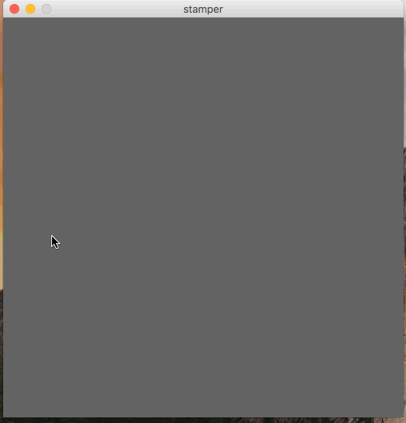
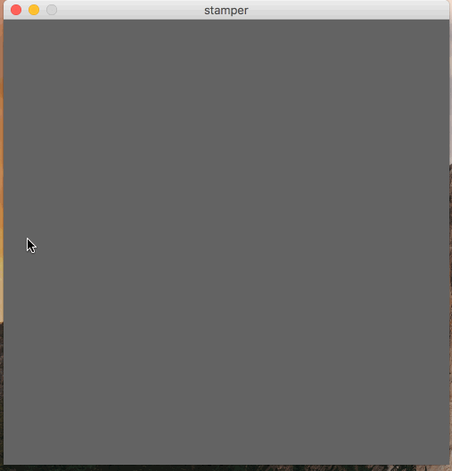

In this assignment, you will write a simple stamp-based drawing program. In this program, the user will be able to selec three different kinds of stamps and four different colors. The user will be able to use these stamps to draw pictures on the screen.
Initially, your program should be a blank, dark-grey or black square canvas. When you move the mouse around the canvas without clicking, nothing should happen. When you click down, one of the three stamps will follow your mouse. The default stamp is the face, and the default color is red.

There are three possible stamps that the user can select: A face, target, and arrows.
The user should be able to switch between these by pressing 'f' (for face), 't' (for target) and a (for arrows).

The user can also change the color of the stamps with the 'r', 'g', 'b', and 'p' keys (for red, green, blue, and purple keys, respectively).

Whenever the user selects a color or stamp by pressing a keyboard key, your program should remember this setting until the stamp/color is changed again.
It should not just take effect while it is being held down.
Also, the user should be able to preess the 'c' key to clear the screen.

You are welcome to add additional stamps and/or colors, but make sure not to use and of the keys mentioned in this assignment to enable them.
All of your programming should be well-formatted and easy for the graders to read and comprehend. You should follow the style guidelines that we have discussed in class. Each program file should have a header comment at the top that has roughly the following format:
//
// Author: Student Name
// Description:
// A short description of what this program does!
//
It is due on 3/2/2018 at 5:00pm.
Name the file stamper.pde.
Turn in each of the files described in the spec (1 total) the assignment dropbox in D2L before the due date.
Make sure to name the files exactly as this document specifies.
In general, make sure to follow these instructions precisely.